淘宝小游戏
Version >= LayaAir 3.1.1
一、概述
淘宝小游戏是指开发者基于淘宝开放平台开发，直接投放至手淘、猫客、淘特等消费者端为淘宝、淘特消费者提供各年龄段适用游戏，包含养成类、益智类、合成类、建造类等。
推荐开发者查看淘宝官方对于小游戏的介绍，能够了解应用场景、查看接入指南等。还可以浏览一下淘宝官方的开发指南。
下载并安装淘宝开发者工具
淘宝开发者工具主要用于小游戏产品的预览与调试、真机测试、上传提交等。是淘宝小游戏开发的必备工具。
在淘宝小游戏发布前，需要先进行通用设置。
二、发布为淘宝小游戏
2.1 选择目标平台
在构建发布面板中，侧边栏选择目标平台为淘宝小游戏。如图2-1所示，
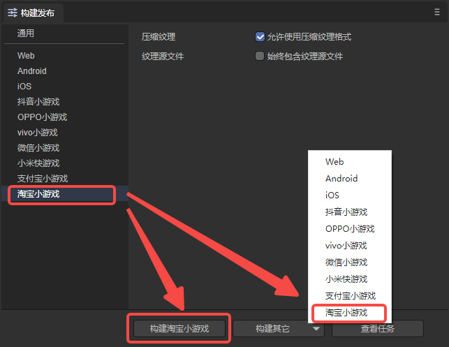
（图2-1）
点击“构建淘宝小游戏”，或“构建其它”选项中的“淘宝小游戏”，即可发布项目为淘宝小游戏。
压缩纹理：一般需要勾选“允许使用压缩纹理格式”，如果不勾选，则忽略所有图片对于压缩格式的设置。
纹理源文件：可以不勾选“始终包含纹理源文件”，如果勾选，则即使图片使用了压缩格式，仍然把源文件（png/jpg)打包。目的是遇到不支持压缩格式的系统时，fallback到源文件。
2.2 发布后的小游戏目录介绍
发布后的目录结构如图2-2所示 ：
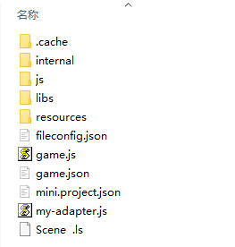
（图2-2）
js目录 与 libs目录：
项目代码和引擎库。
resources目录 与 Scene.ls：
resources资源目录和场景文件Scene.ls，小游戏由于初始包的限制，建议将初始包的内容在规划好，最好能放到统一的目录下，便于初始包的剥离。
game.js：
淘宝小游戏的入口文件，游戏项目入口JS文件与适配库JS等都是在这里进行引入。IDE创建项目的时候已生成好，一般情况下，这里不需要动。
game.json：
小游戏的配置文件，开发者工具和客户端需要读取这个配置，完成相关界面渲染和属性设置。比如屏幕的横竖屏方向。
mini.project.json：
小游戏的项目配置文件，文件里包括了小游戏项目的一些信息，如果想修改，可以直接在这里面编辑。
my-adapter.js：
淘宝小游戏适配库文件。
三、使用淘宝开发者工具创建小游戏项目
3.1 账号准备
预览和调试淘宝小游戏时，需要进行入驻。开发者需要登录淘宝开放平台，登录自己的开发者账号（淘宝账号）并创建应用。具体的操作可以参考官方的文档，入驻成功后就可以进行后续的步骤。
3.2 导入项目
在LayaAir IDE中创建并发布淘宝小游戏项目后，打开淘宝开发者工具，在侧边栏选择小游戏，点击打开项目，如图3-1所示，
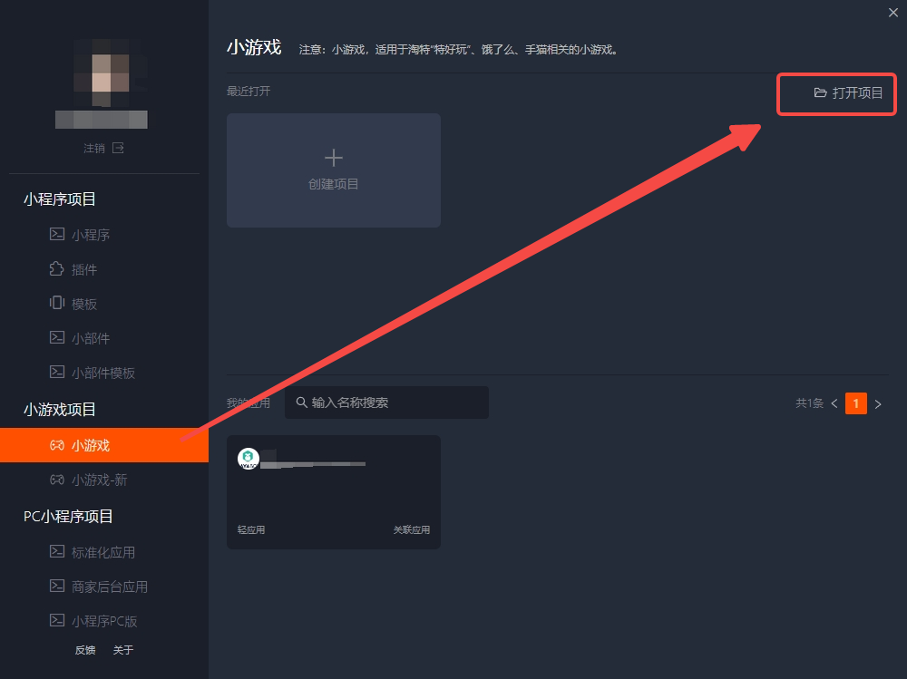
（图3-1）
然后，选择项目路径，项目类型选择“小游戏-新”一栏的选项，关联应用则是在3.1节中创建的应用，最后点击确定打开项目。
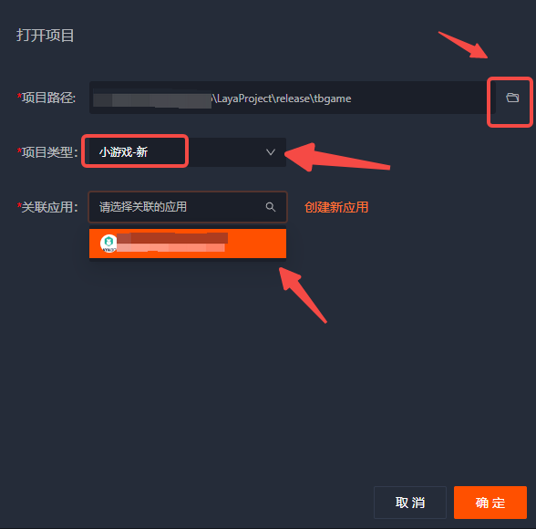
（图3-2）
3.3 真机测试与调试
打开淘宝开发者工具后，一般预览时都要勾选云构建，如图3-3所示，
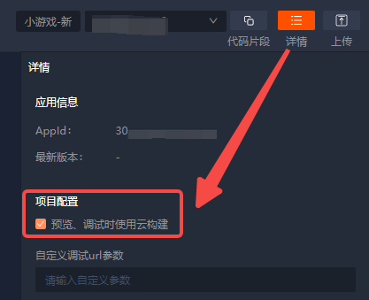
（图3-3）
然后就可以进行预览和真机调试了。如图3-4所示，点击调试按钮，等待二维码生成，使用手机淘宝APP扫码即可。
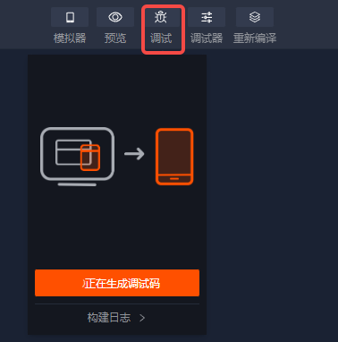
（图3-4）
四、分包加载
下面介绍LayaAir IDE给淘宝小游戏分包的方法，开发者可以先看一下通用设置的分包。可以通过以下步骤进行分包加载，如图4-1所示，勾选开启分包，然后选择要分包的文件夹即可。开发者还可以选择是否开启远程包。
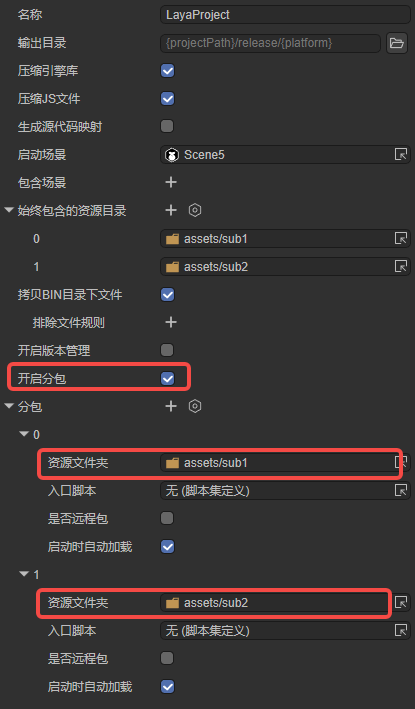
（图4-1）
需要注意，远程包的地址需要使用“阿里云的CDN地址”或“在淘宝开放平台上创建的应用中进行白名单的配置”。所以，远程包地址如果是本地服务器地址会报错，出现下载失败等情况。因此，最好使用https的外部服务器资源地址，并添加到小游戏后台的白名单作用域上。
淘宝小游戏分包限制：
1）整个小程序所有分包大小不超过20MB。
2）单个分包或主包大小不能超过2MB。
请参考淘宝小游戏官方文档。
4.1 推荐使用根目录进行分包
一般来说，在进行图4-1所示的分包时，通常选取的sub1和sub2是资源根目录（assets目录下），如图4-2所示，
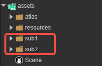
（图4-2）
其发布后的情况如图4-3所示（sub1和sub2都作为根目录）。
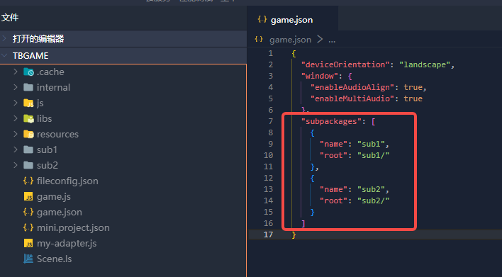
（图4-3）
此时，在代码中加载分包，是可以加载到分包内的资源的：
Laya.loader.load("sub1/Cube.lh").then((res: Laya.PrefabImpl) => {
// ......
});
Laya.loader.load("sub2/Sphere.lh").then((res: Laya.PrefabImpl) => {
// ......
});
4.2 特殊情况下多级目录的分包
有时开发者的分包选取的并不是资源根目录（assets目录下），如图4-4所示，
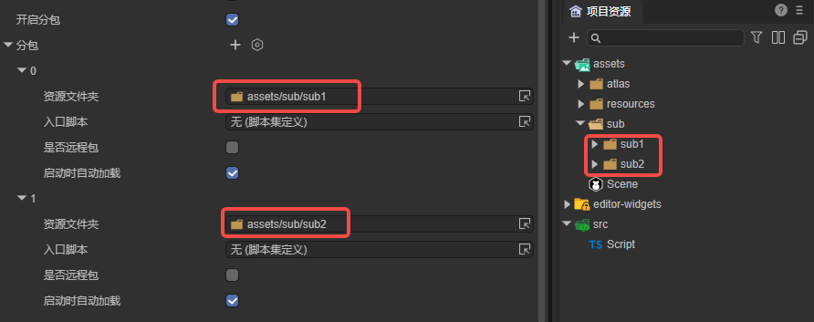
（图4-4）
这样分包，发布后的结果如图4-5所示（sub1和sub2都不是根目录），
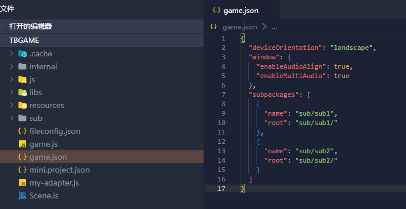
（图4-5）
此时，在代码中加载分包：
Laya.loader.load("sub/sub1/Cube.lh").then((res: Laya.PrefabImpl) => {
// ......
});
Laya.loader.load("sub/sub2/Sphere.lh").then((res: Laya.PrefabImpl) => {
// ......
});
在真机调试的时候，会编译报错，如图4-6所示。
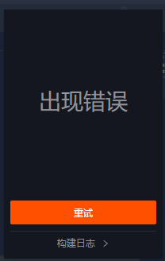
（图4-6）
这是由于淘宝小游戏的限制，所以开发者在发布后，需要更改game.json中的内容，如图4-7所示，将name改为单一目录名。
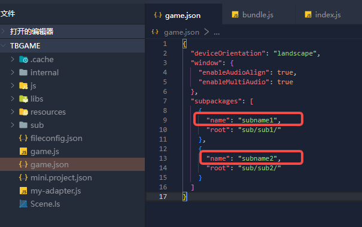
（图4-7）
此时，在代码中加载分包，不要通过路径加载，而改为使用分包名进行加载：
Laya.loader.load("subname1/Cube.lh").then((res) => {
// ......
});
Laya.loader.load("subname2/Sphere.lh").then((res) => {
// ......
});
还需要注意的是，在构建发布时勾选了启动时自动加载选项，需要将自动加载的分包路径更改为分包名，如图4-8所示。
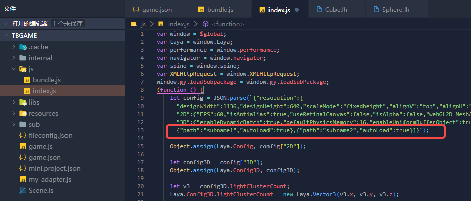
（图4-8）
另外，更改分包名后，如果在分包中的资源有引用resources目录下的资源，需要注意层级关系，如图4-9所示。所以，不建议开发者在分包中引用其它目录下的资源。
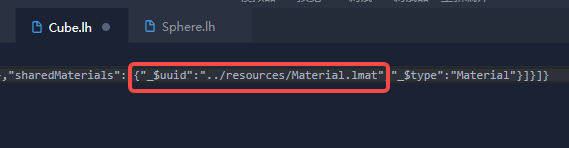
（图4-9）
综上，如果采用4.2节的方式分包，在发布后需要手动更改分包名。因此，建议开发者在管理资源时，就按照4.1节的方式进行规划，这样便于最终的分包。
五、高性能模式切换
5.1 什么是高性能模式
为提升小游戏在手机淘宝中的运行性能，淘宝推出了高性能模式，游戏经过简单的适配，即可大幅提升流畅度。普通模式下，iOS机型面对计算密集型任务时可能存在耗时较久、导致加载界面卡死的问题，切换到高性能模式即可解决。
高性能模式与普通模式的能力基本一致，但有以下几点区别需要注意：
- 基础库依赖：普通模式容器依赖基础库，调用
my.createRewardedAd、my.tb.virtualTrade等接口会有基础库版本限制；高性能模式容器不再依赖基础库，调用上述接口不再有版本限制。 - 回访能力：高性能模式不支持 widget，接入后的回访能力请改为接入“添加到桌面快捷方式”。
- 云存档：高性能模式已支持云存档能力，详情参考淘宝“云存档（新游戏）”接入文档。
- 机型限制：暂不支持鸿蒙机型，最新支持情况请咨询游戏接入运营。
本节内容依据淘宝官方高性能模式文档整理，更多细节请以官方文档为准。
5.2 高性能模式的连接
开启高性能模式后，模拟器调试与普通模式没有区别，需要通过真机来验证是否真正运行在高性能模式下。无论是预览还是调试，都可以通过扫描二维码进入游戏。
真机调试的平台差异需要注意：
- iOS：高性能模式下暂不支持真机调试，只能通过控制台观察日志进行排查。
- 安卓：高性能模式下支持真机调试，可利用 vConsole 进行调试，方便调试小游戏。安卓真机调试效果如图5-4所示。
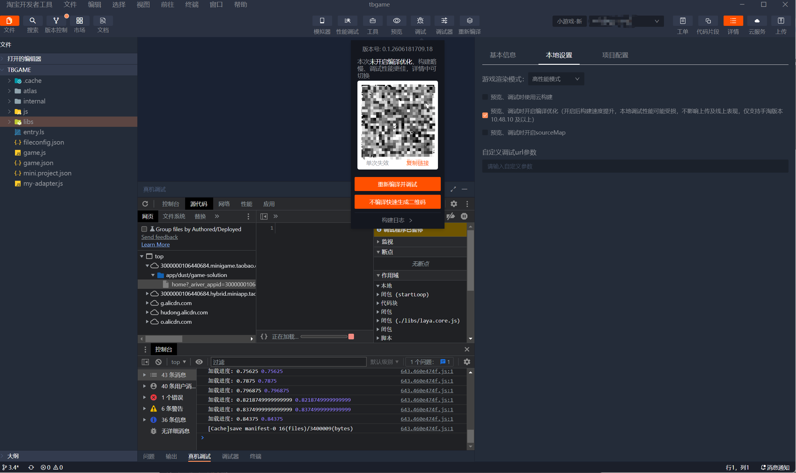
（图5-4）
是否处于高性能模式的判定步骤：
1、在 IDE 中扫描真机预览码（注意是真机预览，不是模拟器），如图5-1所示。
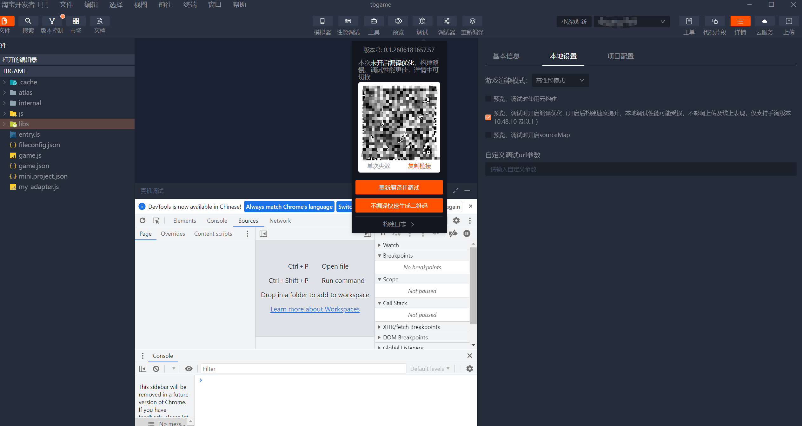
（图5-1）
2、观察游戏画面角落是否出现 vConsole 浮标（可点击展开日志面板）。浮标存在表示运行于高性能模式，浮标缺失则表示运行于普通模式，如图5-2所示。
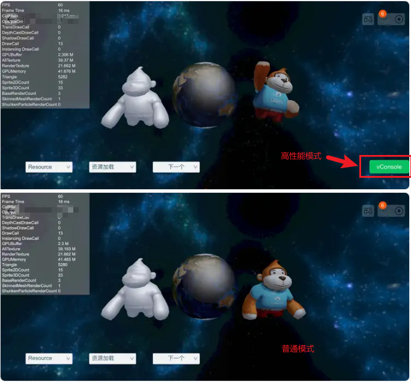
（图5-2）
注意：以上判定方法仅限本地调试预览，上传发布后的体验版本与线上版本不存在该浮标差别。
高性能模式下的真机调试目前仅支持 Android（需最新的安卓手淘包），具体的 IDE 真机调试流程可参考淘宝官方文档：高性能小游戏 IDE 真机调试。
5.3 高性能模式的启动条件
开启高性能模式需要满足以下运行环境要求：
| 项目 | 要求 |
|---|---|
| 手淘版本 | >= 10.46.0，建议直接更新至最新版本。不满足时会自动降级进入普通模式（查看路径：我的淘宝 - 设置 - 关于淘宝） |
| 淘宝开发者工具 | 建议 >= 3.0.9，或直接更新至最新版本（查看路径：淘宝开发者工具 - 关于） |
| minigame-biz 插件 | 需安装小游戏新插件，参考淘宝IDE 安装小游戏新插件文档 |
| 机型 | 暂不支持鸿蒙机型 |
内存与存储限制（务必注意）：
- 高性能模式下内存要求更加严格，触及内存告警水位会在游戏运行时弹出“内存不足”提示。请做好内存优化，建议采用压缩纹理等方案。
- 淘宝小游戏对游戏存储空间有 200MB 限制，超出后磁盘的写入、解压等操作会失败。游戏上线前需针对该情况进行测试，可在遇到磁盘错误时手动调用清理接口请求玩家清理，或向平台申请进入游戏时自动清理。
5.4 高性能模式的切换方式
开启方式： 进入淘宝开发者工具的 IDE 详情页，点击“游戏渲染模式”下拉框，选择「高性能模式」即可，如图5-3所示。
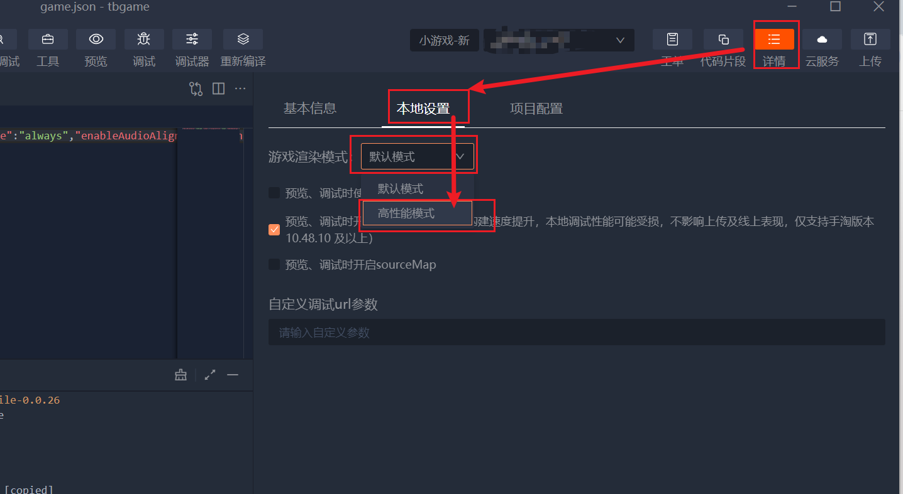
（图5-3）
游戏适配： 正常情况下游戏无需改造即可无缝切换到高性能模式，但仍有少量声明和适配点：
1、环境判断：淘宝原生通过 my.env.isHighPerformanceMode 判断当前运行时是否处于高性能模式；LayaAir 引擎也封装了 Laya.Browser.isIOSHighPerformanceMode 用于判断，对 LayaAir 开发者更为推荐。可据此针对性地做适配：
// LayaAir 引擎封装（推荐）
if (Laya.Browser.isIOSHighPerformanceMode) {
// 这里可以针对高性能模式做一些针对性的适配
}
// 淘宝原生接口
if (my.env.isHighPerformanceMode) {
// 这里可以针对高性能模式做一些针对性的适配
}
2、严格模式：业务代码的 JS 需要开启严格模式。
3、渲染差异：压缩纹理推荐使用 ASTC 格式，以优化内存占用。
六、Q&A
1、真机与IDE表现不一致，或者IDE出现报错
这个以真机预览为准，淘宝IDE出现报错可以反馈给淘宝。
2、作用域问题
由于淘宝小游戏与其他平台的作用域不同，淘宝小游戏作用域为$global，LayaAir已经在发布后的js内，使用var window = $global来替代使用，使用过程中如果存在“xx is undefined”的情况，可以排查下对应js内是否没有进行声明。